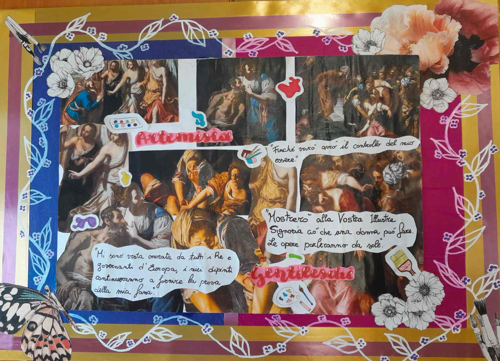
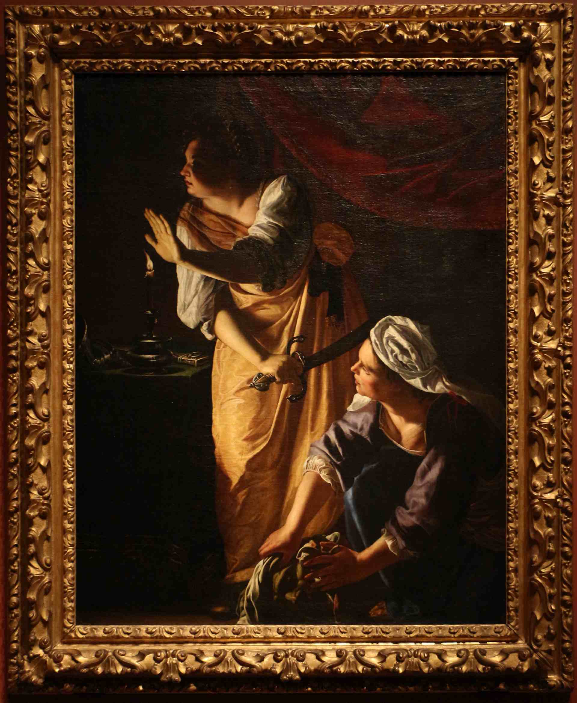

Artemisia Gentileschi
Artemisia Gentileschi è una delle figure più significative nella storia dell'arte del XVII secolo. Nata a Roma nel 1593, Artemisia ha lasciato un'impronta indelebile nel mondo dell'arte con la sua straordinaria abilità artistica e la sua personalità vibrante. Figlia del pittore Orazio Gentileschi, Artemisia fu istruita fin da giovane nell'arte della pittura. La sua formazione artistica sotto la guida del padre e il suo talento naturale si manifestarono precocemente, portandola a dipingere opere di grande maestria già in giovane età. Ma la vita di Artemisia è stata segnata anche da eventi dolorosi. Fu vittima di un brutale stupro da parte di un collega di suo padre, il pittore Agostino Tassi. Questo tragico evento ebbe conseguenze durature sulla sua vita e sulla sua arte, ma Artemisia dimostrò una straordinaria forza interiore nel superare gli ostacoli e nell'affrontare il suo trauma con coraggio. Le opere di Artemisia sono caratterizzate da una potente espressione di emozioni, una profonda comprensione della psicologia umana e una straordinaria abilità nel dipingere figure femminili forti e determinate. I suoi dipinti spesso rappresentano donne protagoniste di storie drammatiche e mitologiche, esplorando temi di violenza, vendetta e giustizia. Tra le opere più celebri di Artemisia vi è "Giuditta che decapita Oloferne", un dipinto iconico che rappresenta la figura biblica di Giuditta mentre compie l'atto di vendetta decapitando il generale assiro Oloferne. Quest'opera è stata interpretata come un potente simbolo di empowerment femminile e di giustizia contro l'oppressione maschile. Artemisia Gentileschi ha influenzato profondamente il panorama artistico del suo tempo e il suo lascito si estende ancora oggi. Il suo coraggio, la sua determinazione e il suo genio artistico continuano a ispirare artisti e appassionati d'arte in tutto il mondo, rendendola una delle figure più ammirate e celebrate della storia dell'arte.
Image Gallery

